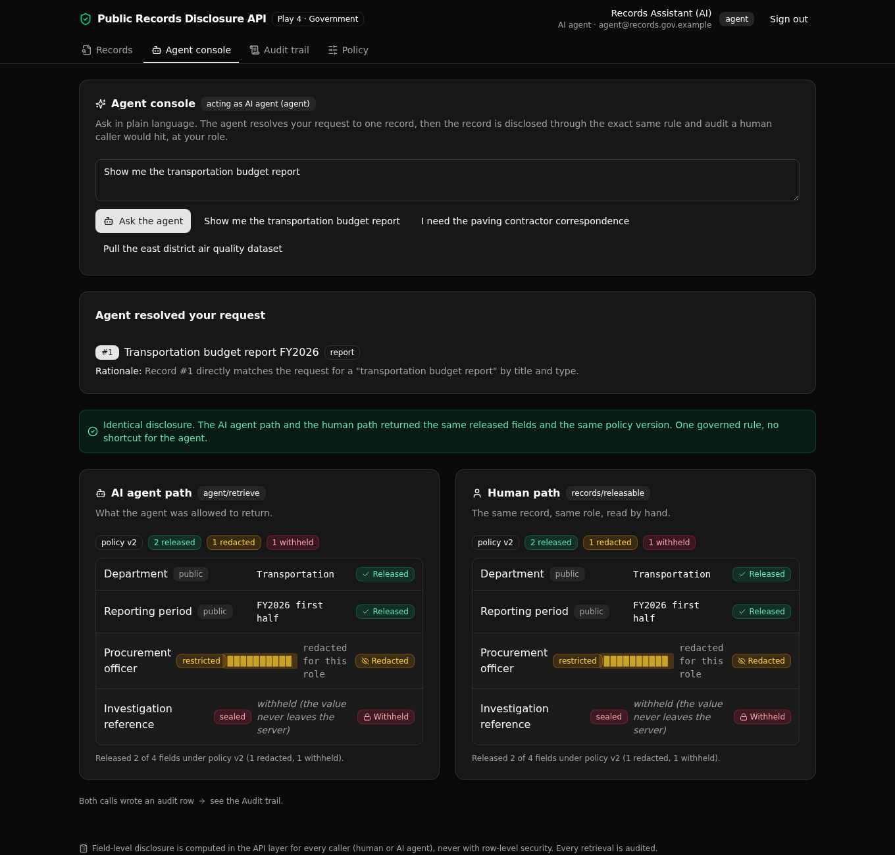

A human clerk and an AI agent call one rule to fetch a record, and the same versioned policy decides which fields are released, redacted, or withheld.

Field-level disclosure and redaction, computed in the API layer, never with row-level security. An AI agent is governed exactly like a human clerk, and every access is audited.
evaluate_disclosure reads the active policy rows and applies (sensitivity, role) to an action. The human endpoint and the agent endpoint both call it, so the answer cannot drift.
The rules are rows in a table, versioned, with one version active. Switch the version and what gets released changes, with the deciding version returned on every read.
The agent maps a plain-language request to one record id, then that record runs through the same rule and the same audit writer. No wider access for the machine.
Every retrieval writes one row: who asked, whether a human or an agent, the deciding policy version, and which fields were released versus withheld.
Nine endpoints under one API group, plus two shared functions and one agent.
| Verb | Path | What it enforces |
|---|---|---|
| POST | auth/login | Verifies the password, mints a role-carrying token. |
| GET | requests/search | Auth required. Request headers only, no field values. |
| GET | records/list | Auth required. Record headers, optionally by request. |
| GET | records/releasable/{record_id} | Human read path. Applies the policy for the caller role, logs a human access. |
| POST | agent/retrieve | Agent read path. Resolves plain language to one record, applies the same rule, logs an agent access. |
| GET | audit/queries | Clerks and admins only. The full audit trail. |
| GET | rules/active | The active policy version and its per-sensitivity rules. |
| POST | rules/activate | Admin only. Switches the active policy version. |
| POST | seed/run | Public reset and seed, so a fresh deploy is browsable at once. |
A React frontend that derives every path and type from the query definitions.
Point your AI coding agent at this repo, or clone it yourself. You need a Xano account and Node 20.19 or newer.
Set up the Xano backend and React frontend from
https://github.com/xano-scratch/public-records-disclosure-api
Clone it, run `npm install`, then `npx xanots login` and
`npm run xano:deploy`. Open the live URL it prints and sign in
as one of the demo roles.Or run it by hand:
git clone https://github.com/xano-scratch/public-records-disclosure-api
cd public-records-disclosure-api
npm install
npx xanots login
npm run xano:deploy
Any demo link shared for this template points at an ephemeral Xano environment that expires. If a
link has stopped serving, the repo is the durable artifact: clone it and run
npm run xano:deploy for a fresh backend and frontend of your own. The deploy seeds its
own demo data, so it is browsable right away.